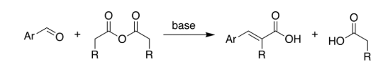
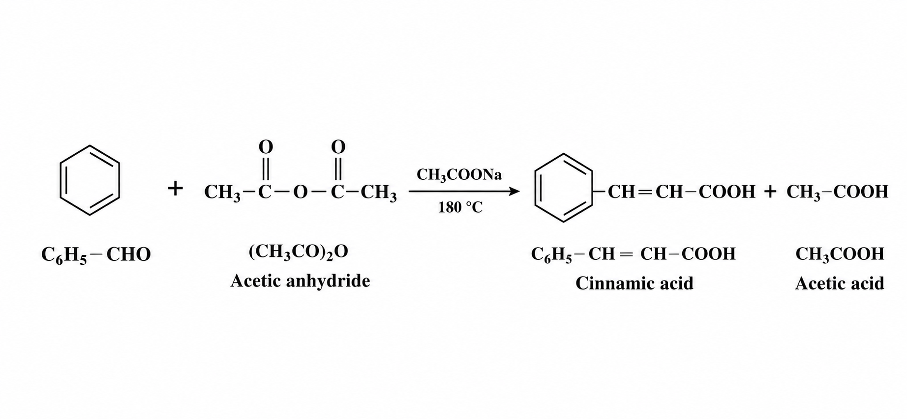
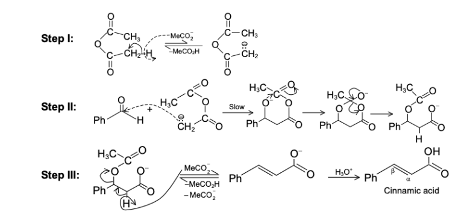

The Perkin reaction is an organic reaction in which an aromatic aldehyde reacts with an acid anhydride in the presence of the sodium or potassium salt of the acid to produce
α,β-unsaturated aromatic acids. The reaction is mainly used for the preparation of cinnamic acid and its derivatives.
In this reaction, the anhydride acts as both solvent and reactant, while the salt of the acid functions as a base catalyst.
The Perkin reaction is an important carbon–carbon bond forming reaction in organic chemistry and is widely used in the synthesis of perfumes, pharmaceuticals, and fine chemicals.

Benzaldehyde reacts with acetic anhydride in presence of sodium acetate to form cinnamic acid.

It is observed that the acetate ion abstracts a proton from the a-carbon of the anhydride producing a carbanion which then attacks the carbonyl group of the aldehyde.
The product then abstracts a proton from the acid to form - aldol type compound. The latter then undergoes dehydration in the presence of hot acetic anhydride.
